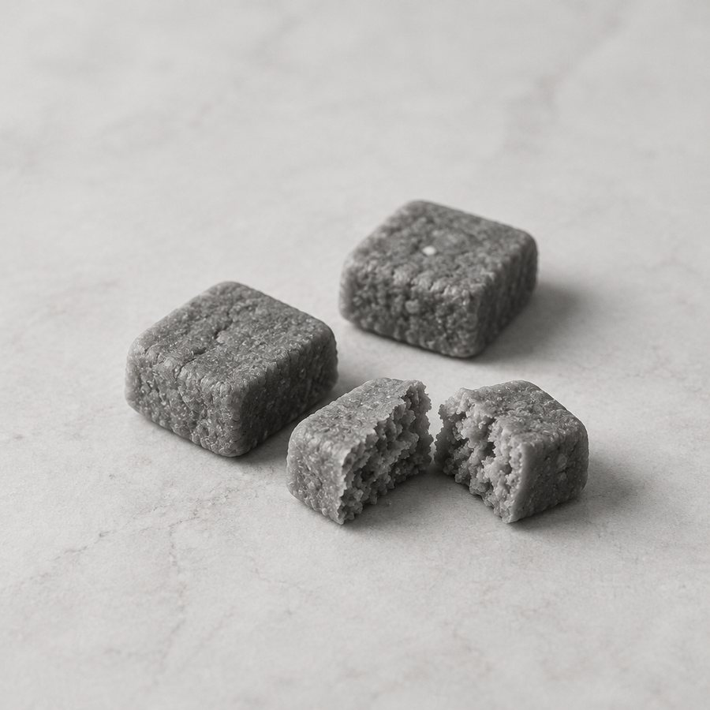
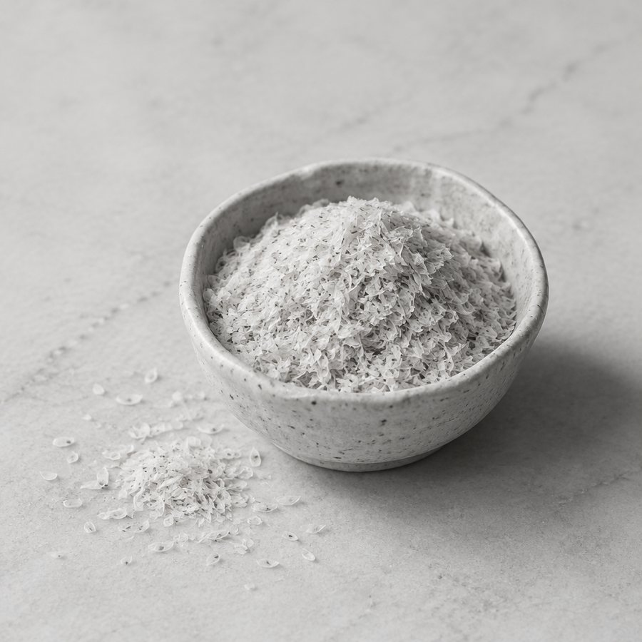
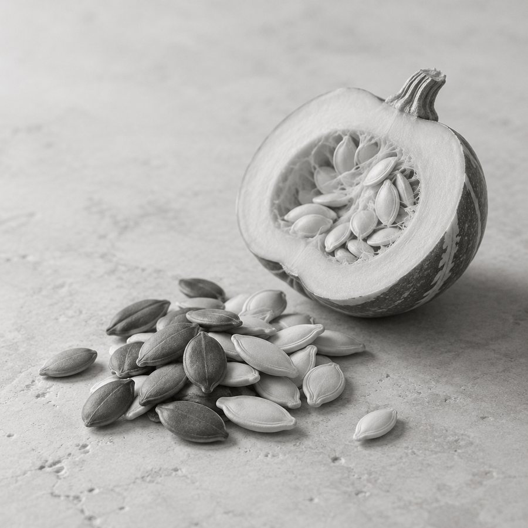

01BACILLUS VELEZENSIS
A live gut-flora culture that helps support a balanced digestive system.
Meet Gut & Digestion — a UK-made soft chew with a live gut-flora culture, designed to support healthy digestion. One small daily ritual, together.
A little daily care, from the inside out.
A UK-made soft chew with Bacillus velezensis, a live gut-flora culture, plus prebiotic inulin and natural fibres. Designed to support healthy digestion in a small chew that fits your dog’s daily routine.
[Confirm benefit wording with the manufacturer before launch]
*One jar lasts 30 days for a 10–30 kg dog (2 chews a day) · Free UK delivery over [£XX]
Composition: Tapioca starch, gram flour, glycerine, refined rapeseed oil, yeast products, potato starch, beta glucans, inulin, sugars, psyllium husk powder, pumpkin and squash seeds, crude lecithins, vegetal carbon, minerals, vegetable derivatives.
Additives (per kg): Zootechnical additives: 4b1820 Bacillus velezensis DSM 15544 7.50 × 10¹¹ CFU.
Crude protein 11.5% · Crude fat 13.3% · Crude fibre 0.6% · Crude ash 3.1% · Moisture 14%.
Under 10 kg: 1 chew · 10–30 kg: 2 · 30–45 kg: 3 · Over 45 kg: 4 a day. A complementary feed for dogs over 12 weeks of age. Allow 4–6 weeks for optimum results.
[Delivery times, costs and returns policy to be added]
Our first chew starts with the gut — thoughtful daily care, made to fit the life you share.
The key ingredients behind our first chew — simple names, clear purpose. Full composition is on every jar and below.

01A live gut-flora culture that helps support a balanced digestive system.
A prebiotic fibre that feeds the good bacteria already in the gut.

03A gentle natural fibre for everyday digestive comfort.

04A familiar, wholesome source of fibre and natural oils.
Bacillus velezensis is listed as a zootechnical additive (4b1820, 7.50 × 10¹¹ CFU per kg). See full composition
Every good dog has a person walking beside it. Two Shadows is made for that bond — small, honest daily care that fits the life you share.
Better lives for pets. Peace of mind for their people.
No powders, no measuring spoons. Just a little moment, together.
Short videos from dogs and their people. Share yours with #twoshadowsdogs.
Soft chews for dogs with Bacillus velezensis, a live gut-flora culture, plus prebiotic inulin and natural fibres — a complementary feed designed to support healthy digestion.
Daily, by weight: under 10 kg 1 chew, 10–30 kg 2, 30–45 kg 3, over 45 kg 4. The guide is printed on every jar.
Gut & Digestion is for dogs over 12 weeks of age. If your dog is unwell, on medication or has a health condition, check with your vet first.
Yes — Bacillus velezensis DSM 15544, listed as a zootechnical additive at 7.50 × 10¹¹ CFU per kg.
Every dog is different. Allow 4–6 weeks of daily use for optimum results.
In the UK, in a GB-registered feed facility.
60 chews: 60 days for a small dog, 30 days for a 10–30 kg dog, 20 days at 3 a day and 15 days at 4 a day.